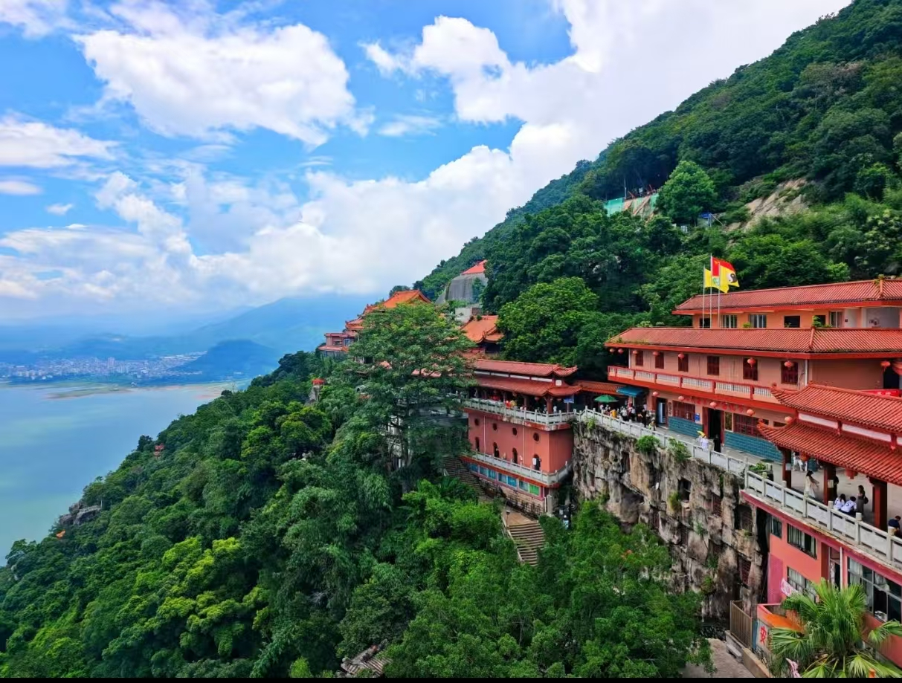
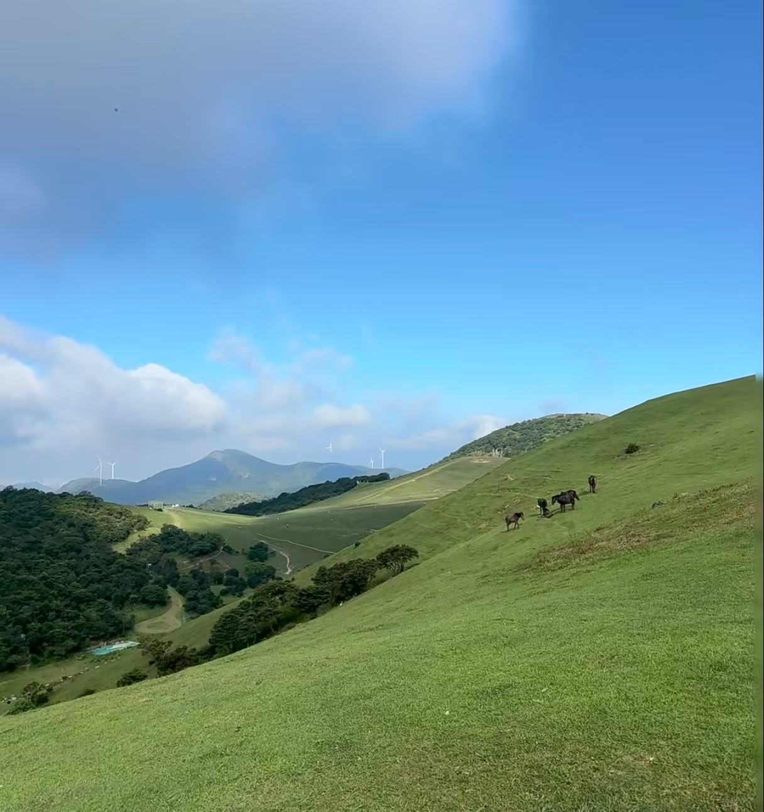

福清市位于福建省福州市南部，东临平潭县，西南接莆田市涵江区，北邻长乐区，总面积2430平方公里。市人民政府驻玉屏街道一拂路28号。截至2025年2月，福清市下辖7个街道和17个镇
福清历史悠久，唐武周圣历二年（公元699年）设县，唐天宝元年（742年）改名福唐县，后唐长兴四年（933年）定名福清县，名称取自“山自永福里，水自清源里”中的“永福”“清源”二字 。1990年12月，经国务院批准撤县建市，成为县级市，由福州市代管 。
截至2024年末，福清市常住人口约141.7万人，城镇化率为55.85%。福清是著名侨乡，海外华侨华人约63万人，分布在东南亚、日本、美国及西欧等73个国家和地区。

